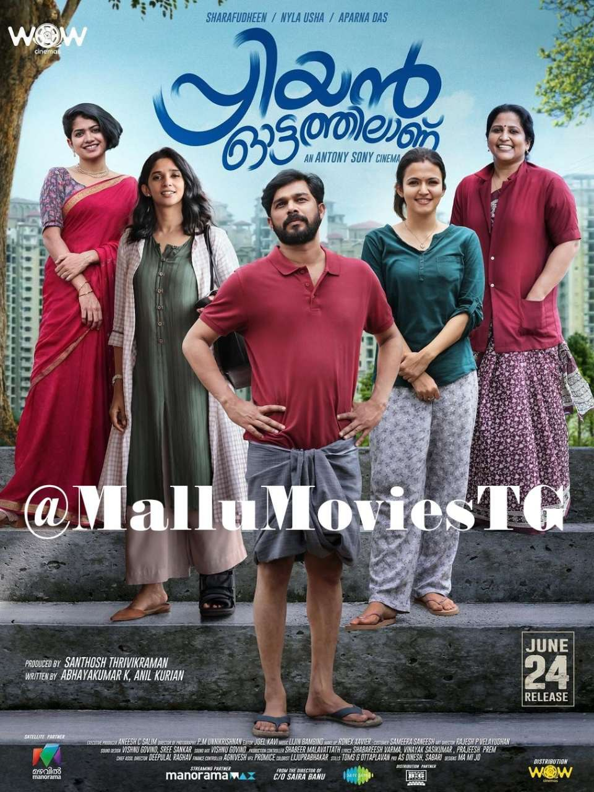
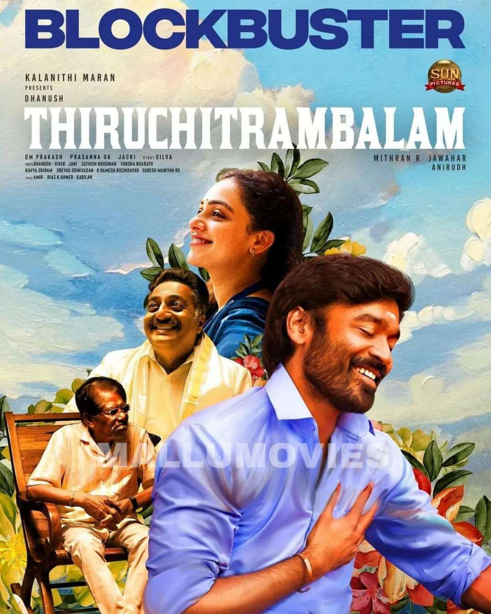
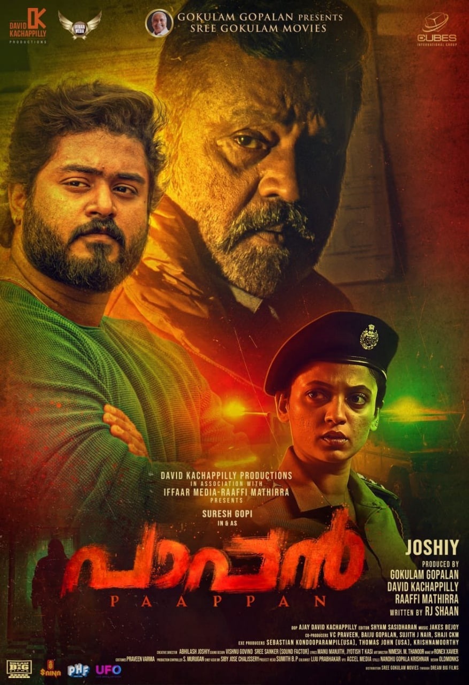

OTT UPDATES(Malayalam : SEPTEMBER 2022)
1.Sundari Gardens

Sundari Gardens Movie OTT Release Date: Aparna Balamurali, who won national award for her performance in Soorarai Pottru recently, is coming with a direct to OTT release movie ‘Sundari Gardens’. Movies in which she is part of, are releasing the updates once the actor is announced as the winner of the National award by the government. This movie is all set to premiere directly on Sony Liv OTT platform.
2. Priyan Ottathillanu

Sharafudheen Starer latest Malayalam Movie Priyan Ottathilanu Digital Rights Purchased by Manorama Max, its available now on manorama max
3.Thiruchitrambalam

Thiruchitrambalam is now streaming on the OTT platform Sun NXT in the original Tamil version and the four dubbed versions in Telugu, Malayalam, and Kannada languages. The film has been available on the streaming platform since Friday, September 23
4.Paapan

Suresh Gopi-starrer Paappan, which hit big screens on July 29, is set for its OTT release. The film is slated to be released on Zee5 on September 7. Upon its theatrical release, the film emerged as a big success at the box office.
5.Nna Thhan Case Kodu
 Critically acclaimed Malayalam movie Nna Thaan Case Kodu is a recent superhit starring Kunchacko Boban. With its brilliant concept and production, the film directed by Ratheesh Balakrishnan Pothuval won over audiences. This movie is now available in Disney+Hotsar.
Critically acclaimed Malayalam movie Nna Thaan Case Kodu is a recent superhit starring Kunchacko Boban. With its brilliant concept and production, the film directed by Ratheesh Balakrishnan Pothuval won over audiences. This movie is now available in Disney+Hotsar.
6.Sita Ramam
Rashmika Mandanna, Dulquer Salmaan & Mrunnal Thakur starrer- Sita Ramam, will release on Prime Video and have its digital premiere. The mysterious love story in the Telugu blockbuster will be available to stream from September 9